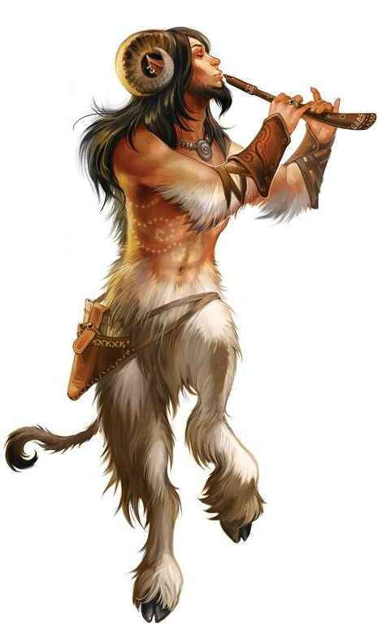

Playable Races > Satyr
Also known as Stagkin. Caprine beastkin, descendants of staunch defenders of nature from millenia ago. They have carved their own path as of late not unlike other former servants of the Gods. They are very playful- some might say capricious, but their dedication to upholding balance is remarkable.
Panflute: Satyr can innately cast the spell charm animals once per 3 levels daily. This abilty extends to humans at level 5, and monsters at level 10.
Racials: +2 WIS -1 STR +4 Knowledge (Nature) +4 Diplomacy +4 Perform
Health: 1d8 health points per level.
Origin: Satyr live in Tel'layl along with the Fey Elves, and serve them as assistants and advisors.